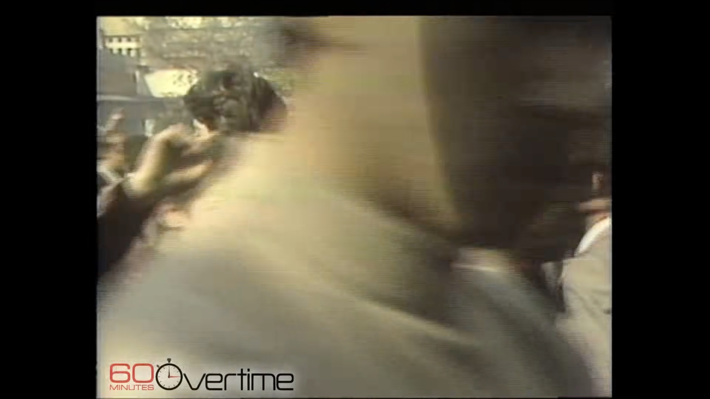

Numa altura em que os direitos humanos estão sob pressão devido à escalada do autoritarismo e à crescente polarização, e em que a intolerância e a discriminação estão a aumentar, é mais importante do que nunca unirmo-nos para defender os direitos humanos.
Muitos dos direitos que temos hoje em dia, só existem porque gerações antes de nós não tiveram medo de sair à rua, e protestarem para lutar por eles. Chegou a altura de sairmos também nós à rua para evitar que esses direitos nos sejam retirados.
Em setembro de 2029, antes das próximas eleições legislativas, junte-se a nós para lutar pelas causas em que acredita, pela nossa liberdade e pela nossa democracia!
Se esta for a última manifestação antes da subida ao poder de movimentos anti-direitos, que poderá ter como consequência a perda de direitos que tanto nos custaram a conquistar, qual a causa que vai querer defender?
